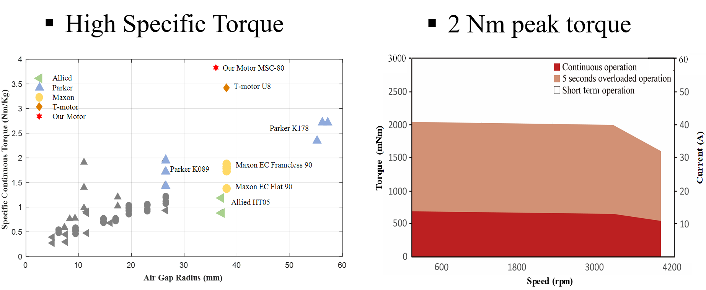

High Performance Electric Motor
High torque density actuator enables a new robot design paradigm - quasi-direct drive, that significantly improves the bandwidth and transparency of co-robots that interact with human or the enviroment. We developed a novel knee exoskeleton combining the advantages of a high torque density motor and a bi-directional cable transmission system. The exoskeleton is lightweight and highly backdrivable. Performance evalutation demonstrates that the torque control bandwidth is up to 30Hz. These characteristics enables safe interaction between users and the exoskeleton.

Fabry-Perot Interferometer Fiber Optic Force Sensor
Traditional sensors in robotics include force and positioning sensing. However, off-the-shelf sensors are not suiatable for use in MRI due to the potential for image degradation, malfunction, or safety issues. We are evaluating and developing sensors to be used in the MR environment. The current focus is on optical techniques for force and position sensing that do not compromise image quality and will allow for haptic feedback during MRI-guided interventions.